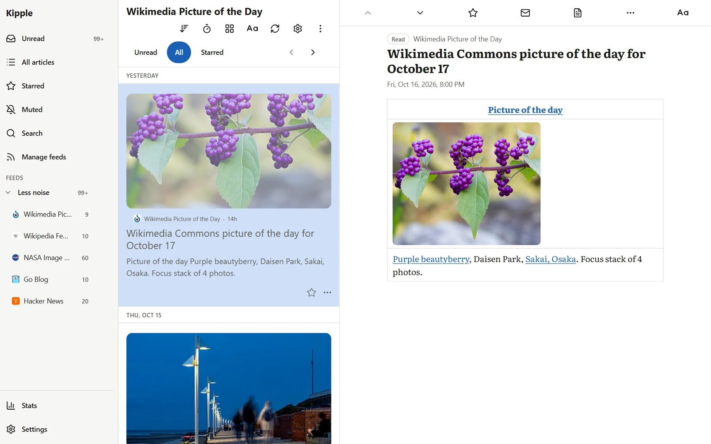
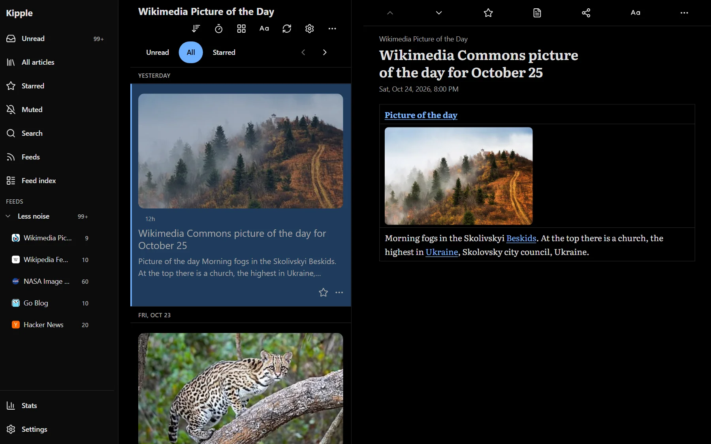
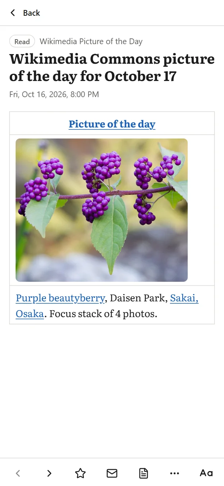
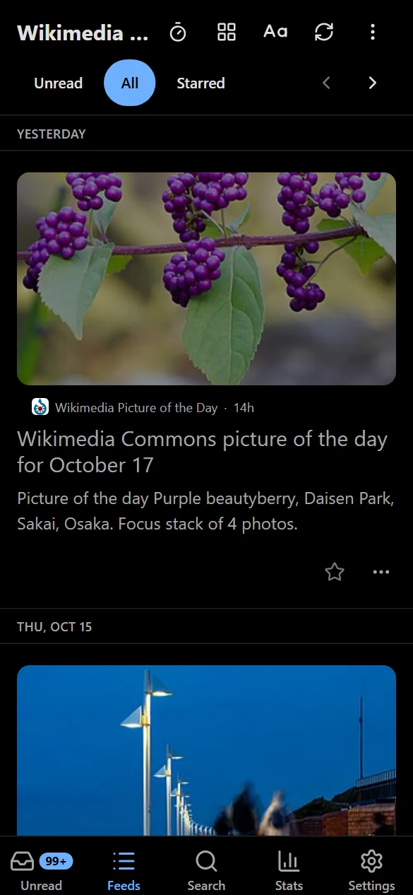

Self-hosted RSS reader.
An RSS reader for one person, on a machine you run.
kipple /ˈkɪpəl/ n. Philip K. Dick's word for the useless things that pile up when nobody is looking. Your unread count, mostly.
420
unread
across 6 feeds
across 6 feeds
- Unsung187
- 512 Pixels101
- Storied Colors69
- Electrek42
- McSweeney's13
- Saturday Down South8
Screenshots




What's different
- Layouts grouped by how you read. Editorial, the default, and Cards open each article with its photo. Compact, Inbox and Headlines are lists for getting through a lot. Gazette and Digest turn the day into pages and sections.
- Each device keeps its own layout, and a folder or a single feed can have its own.
- Color schemes in day and night pairs. Follow the system, put them on a schedule, or pick one and leave it.
- One account. Feeds, read state and reading stats sit in a database on your server, and the yearly summary is drawn from there.
- Any app that syncs with a Google Reader account syncs with Kipple.
- Made by one person, with Claude Code.
Anti-features
- No AI
- No notifications
- No social
- No monitoring or telemetry*
*Kipple keeps reading statistics in your own database. Nothing is sent anywhere.
Install
Kipple is a Docker image. The README has the one-line command, and the deploy guide covers backups and upgrades.